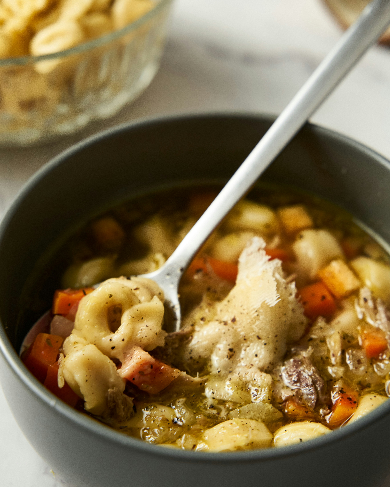

Home
One-Pot Italian Sausage and Tortellini

Description
Looking for something that is quick but super tasty? This one-pot Italian sausage and tortellini checks all the boxes! Using pantry and refrigerator staples, it comes together quickly and can easily be doubled for a larger group.
Ingredients
- 1/2 pound Italian sausage
- 2 tablespoons butter
- 2 teaspoons minced garlic or garlic paste
- 1 teaspoon freshly ground black pepper
- 1 teaspoon onion powder
- 1/2 teaspoon Italian seasoning
- 1/2 teaspoon red pepper flakes
- 2 cups beef broth
- 1/4 cup heavy cream
- 8 ounces fresh cheese tortellini, such as Buitoni®
- 2 ounces garlic, chive, and onion cream cheese
- 1/4 cup grated Parmesan cheese
- fresh basil, for garnish
Steps
- Gather all ingredients.
- Set a large skillet over medium heat. Break up sausage into bite-sized chunks, removing any casings. Add to the pan and cook until browned on all sides, about 5 minutes. Remove sausage to a plate; set aside.
- Let the skillet cool down for about 3 minutes; place back over medium heat and add butter, then garlic. Saute for 1 minute, then add black pepper, onion powder, Italian seasoning, and red pepper flakes; stir.
- Pour in beef broth and heavy cream; stir to combine.
- Add tortellini and cream cheese and stir together. Bring to a simmer, cover, reduce heat, and simmer until tortellini is tender, about 5 minutes. Check for doneness, and simmer for 2 or 3 minutes more if needed.
- Remove from heat and stir in Parmesan cheese. Serve in bowls with fresh basil on top.